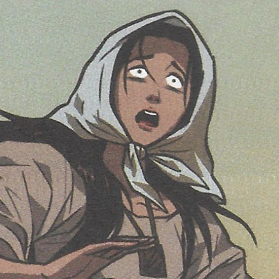
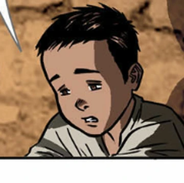
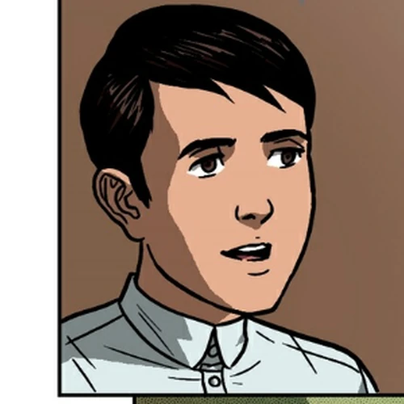

He has endured many hardships and so he workes in order to help its current society for the better
He has saved Ibarra multiple times in the story
Image Reference: Wiki, C. T. M. C. a. I. (n.d.). Elias. Maria Clara at Ibarra Wiki. https://mariaclaraatibarra.fandom.com/wiki/Elias
Pilosopo Tasyo o Don Anastacio
He is an old scholar who was living in San Diego
He was thought to be crazy due to his ideas being quite unsual to society's standards
Even with this odd reputation, he soon became an adviser to certain people in the story
Image Reference: Wiki, C. T. N. M. T. (n.d.-f). Pilosopo Tasio. Noli Me Tangere Wiki. https://noli-me-tangere.fandom.com/wiki/Pilosopo_Tasio

Sisa
She is the devoted an loving mother of both Crispin and Basilio in the story
In the story, she has experienced many hardships so her mind is mentally unstable and fragile to anything that would hurt her mentally, like losing her children
Sadly, she is poor due to the constant abuse and manipulation of the Spanish authorities and friars
Image Reference: Wiki, C. T. N. M. T. (n.d.-g). Sisa. Noli Me Tangere Wiki. https://noli-me-tangere.fandom.com/wiki/Sisa

Crispin
He is the younger son of Sisa
He was accused of stealing from the church and was thus punished
After he was punished, he was thought to be dead as Basilio never saw him after he ran for his life
Image Reference: Wiki, C. T. N. M. T. (n.d.-c). Crispin. Noli Me Tangere Wiki. https://noli-me-tangere.fandom.com/wiki/Crispin

Basilio
He is the older son of Sisa, and was the only one to left alive
With the death of his mother and the disappearance of his brother, he ran away from Manila, but was taken in by Kapitan Tiago
Eventually, he becomes a student of medicine and proceeds to try to create his own academy
Image Reference: Wiki, C. T. N. M. T. (n.d.-a). Basilio. Noli Me Tangere Wiki. https://noli-me-tangere.fandom.com/wiki/Basilio
Donya Victorina de Espadaña
She was a proud and fashionable women in society
She and her husband use their popular friends to show that they high status and popularity too
She is also the wife of Don Tiburcio
Image Reference: Wiki, C. T. N. M. T. (n.d.-e). Doña Victorina. Noli Me Tangere Wiki. https://noli-me-tangere.fandom.com/wiki/Do%C3%B1a_Victorina
Don Tiburcio de Espadaña
He is the husband of Donya Victorina
Under the words of Donya Victorina, he was a Spanish Docotr in the Philippines
When he first came to the Philippins, he came as a petty official
Image Reference: Personality List. (n.d.-b). Don Tiburcio Personality type, MBTI - Which personality? https://personalitylist.com/profile/455014/noli-me-tangere-el-filibusterismo/don-tiburcio/
Donya Consolacion
She is the wife of Alperes
Before she married, she was a laundrywoman.
She always tries to look high in society with lipstick and make-up
Image Reference: Tauhan. (n.d.). Pamana Ni Rizal. https://therizalinerepublic.weebly.com/tauhan.html
Alperes
He is the husband of the Donya Victorina
He was also the head of the Civil Guard in the story
He was against the aggresive wishes of his wife against others such as Sisa